Benchmark · Deep Dive
Our closest kin. A cozy, authenticity-first slow-life sim about restoring an abandoned homestead and a dying village in rural Japan. A twelve-dimension teardown — read through The Benchmark Lens — of a game that shares our exact soul, and whose community feedback hands us a ready-made list of what to do and what to avoid.
Why this game, specifically
It began as an Apple Arcade title (streamlined, mobile-first), then came to PC and Switch. Reviewers call it an "iyashikei" (healing) game, "a playable NHK documentary," and compare it to Millennium Kitchen's Boku no Natsuyasumi — not for customization, but for appreciating and helping the world around you. Its premise touches a real issue: rural depopulation and akiya (abandoned houses) in Japan. Swap the setting for a 1700s Meitei valley and it is our thesis, already shipped.
Platform note
This game is mobile-first (Apple Arcade), then ported up to PC and Switch — its low-precision, menu-driven design travels well, though the PC port drew scaling and control complaints. See Cross-Platform Lessons for the full comparison.
The user's brief was explicit: learn from Steam feedback what to do and what to avoid. The reviews are unusually consistent, so we distil them into two columns. Everything on the left is a proven source of delight to emulate; everything on the right is friction that broke the cozy spell for players and must not survive into our game.
Emulate
Avoid
The core lesson
Players adored the intent and forgave the rough English translation, yet many still stopped around 10–20 hours because friction accumulated. For a cozy game, the sum of small annoyances is the real difficulty curve. Authenticity earns love; friction spends it. Our job is to keep the first and refuse the second.
You move to a neglected rural village and take over an abandoned traditional house (a minka). The fantasy is belonging + restoration + preservation: repair a home and a community, live self-sufficiently, and keep a disappearing way of life alive by practising it. It quietly dramatizes real rural depopulation.
Verdict · Emulate
This is our fantasy almost verbatim, only re-rooted from modern rural Japan to a 1700s Meitei valley. Keep the restore-and-preserve spine; change the culture being kept alive. Of all our references, this premise is the one to hold closest.
A day is short and unhurried: wake, repair or build a little, then farm, fish, forage, dig, and cook, punctuated by seasonal events. Months are only two in-game days each (twelve months a year), so time moves briskly while you still decide how to spend each day. Building happens incrementally — a bit of progress you can see daily.
Verdict · Emulate the compression, fix the drag
Adopt the short-month compression and the build-in-visible-steps loop. But add what players begged for: a sleep-to-skip so quiet days do not drag, and never let weather (their winter snowballs) turn traversal into a chore.
The system spread is wide: house and village restoration, light farming (crops grow in about four days, in any season), deep self-sufficiency crafting (salt from seawater, miso and soy sauce from soybeans, cooking at the irori hearth), plus fishing, foraging, digging, pottery, photography, and bug-catching — most fronted by a small minigame.
Verdict · Emulate restoration & craft chains; tame the minigames
Take the restoration loop and the authentic production chains and re-skin them to Meitei crafts (weaving, pottery, fermented staples, house-raising). Keep minigames optional and forgiving — the community flagged fiddly, mandatory minigames as a top annoyance.
Early on, low stamina limits you; it grows quickly and unlocks freedom. An ordered event list acts as a soft main quest — you can see what is next but are not forced to do it in order. Collections and the steadily reviving village supply long-horizon progress.
Verdict · Emulate visible-world progression; reject grind gates
Keep the stamina-gated gentle opening and the "the village literally looks more alive" feedback loop — it is motivating and legible. Reject the hard money walls (the 50k mayor demand) that forced grinding and made players quit. Progress should follow effort, not a paywall of chores.
Through a self-determination lens, the game is strong on autonomy (your pace, your order) and competence (mastering real customs and crafts), and it aims for relatedness through community projects. Stakes are deliberately low. Where it stumbles is exactly where it undercuts its own motivators — anxiety systems and shallow NPCs that sap autonomy and relatedness.
Verdict · Emulate the drivers; protect them
Autonomy-plus-competence-through-culture is precisely our engine. Guard it: no trust-decay anxiety loops, no forced systems the player cannot predict. Every mechanic should feed one of the three drivers, never fight it.
The economy is intentionally anti-optimization and gentle, but two frictions dominate reviews: money is very hard to earn (fishing becomes the reliable grind), and selling is gated — a buyer visits and only accepts specific bundles, so you cannot simply sell what you produce.
Verdict · Adapt gentle economy; reject the sell gates
Keep a low-pressure economy where money is a means, not a scoreboard. But make selling frictionless and legible — no combinatorial bundles, no single grindy income source. If we gate anything, gate on story or seasonality, never on opaque rules.
Relationships are light: no marriage, many villagers older, and trust is built by completing community projects rather than filling gift meters. As the village recovers, tourists and schoolchildren appear. The recurring criticism: NPCs are often unnamed roles ("the kind woman," "the postman") with no personal storylines, which left players feeling lonely.
Verdict · Emulate project-trust; reject anonymity
Keep trust earned through tangible help and the visible-revival payoff. But give our villagers real names, faces, and small personal arcs so that helping them lands emotionally. In a game about community, the community must feel like people.
The story is ambient and event-driven, carried by the seasons and the poignant real-world theme of a fading countryside. It scales by unlocking more of the map and more village projects — but reviewers agree it tapers into a to-do list of fetch quests after roughly fifteen to twenty hours.
Verdict · Emulate the theme; reject to-do-list scaling
The preservation theme is exactly what gives our project meaning — lean into it. But scale with new kinds of content and small human stories, not by multiplying chores. When late content becomes a checklist, the magic dies; keep quests organic and finite.
Warm, detailed pixel art and a relaxing soundtrack create a genuine "iyashikei" calm, praised repeatedly. The documentary-like reverence for plants, animals, weather, and custom is central to the appeal. The only complaints are practical: default music too loud, some fullscreen scaling issues, and repetitive voice lines.
Verdict · Emulate the healing tone; fix the defaults
Adopt the healing, documentary reverence and translate the pixel warmth into a Meitei visual language. Ship the boring wins the community wanted: sane default audio, robust fullscreen scaling, and varied ambient sound.
Its mobile-first origins make the controls streamlined and console-friendly. But the guidance is uneven: trivial actions get heavy tutorials while real objectives stay unclear, some Japanese terms are opaque to newcomers, and basic options are hard to reach. Players forgave a rough English translation but wanted clearer direction.
Verdict · Emulate streamlined inputs; fix guidance
Keep inputs simple and portable. Balance the tutorial: teach objectives, not trivia. Introduce native Meitei terms gently — glossary on first use, learn-by-doing — so authenticity educates instead of confusing. Put options where players expect them.
At its best the game delivers belonging, reverence for the land, and real unwinding — the feeling of tending something worth keeping. That feeling is fragile: the reviews show it is broken not by any single flaw but by a stack of small annoyances (anxiety animals, sell gates, softblocks, drag) accumulating over hours.
Verdict · Emulate the intent; defend it obsessively
The emotional target — healing, belonging, preservation — is ours too. Treat every friction point on the "Avoid" list as a threat to that feeling. Cozy is not the absence of challenge; it is the absence of avoidable stress.
Of all our benchmarks, this is the one whose soul we should copy most directly: authenticity as the fun, restoration as the loop, preservation as the meaning. Stardew teaches us breadth and polish; Japanese Rural Life Adventure teaches us purpose — and, just as valuably, hands us a tested list of the anti-cozy friction that even a beloved game can accumulate. We take the soul, and we refuse the friction.
Friction to design rule
| Community friction | Our design rule |
|---|---|
| Finicky animals with trust decay | No unpredictable anxiety systems; care is rewarding, never punishing. |
| Combinatorial, gated selling | Sell anything, anytime, in any quantity; economy is legible. |
| Grind walls (50k mayor, 27 cats) | Progress follows effort and story, never a chore paywall. |
| Season-locked softblocks | No unplannable dead ends; interrupted tasks can always be resumed. |
| No day-skip; winter drag | Let players sleep to skip; never let weather block movement. |
| Late-unlocked calendar; missed events | Calendar available early; missed events recur or forgive. |
| Missing QoL (sprinklers, options, audio) | Ship genre-standard conveniences and sane defaults. |
| Fiddly mandatory minigames | Minigames optional and forgiving; never gate progress behind twitch skill. |
| Unnamed, arc-less NPCs | Every villager has a name, a face, and a small human story. |
| Uneven tutorials, unclear goals | Teach objectives, not trivia; introduce native terms gently. |
Reference shots live in docs/assets/benchmarking/japanese-rural-life/ (raw files start in
_intake/japanese-rural-life-adventure/), grouped below by the systems they illustrate. Add more by
dropping files there and adding another <figure> with an
<img src="../assets/benchmarking/japanese-rural-life/…">. See
Asset Management.
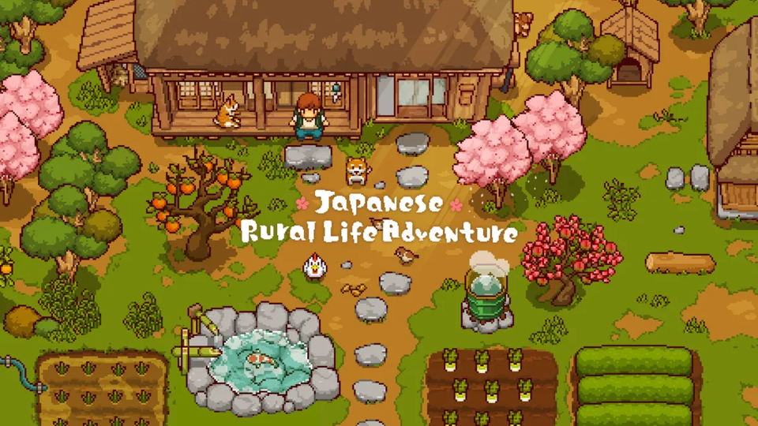
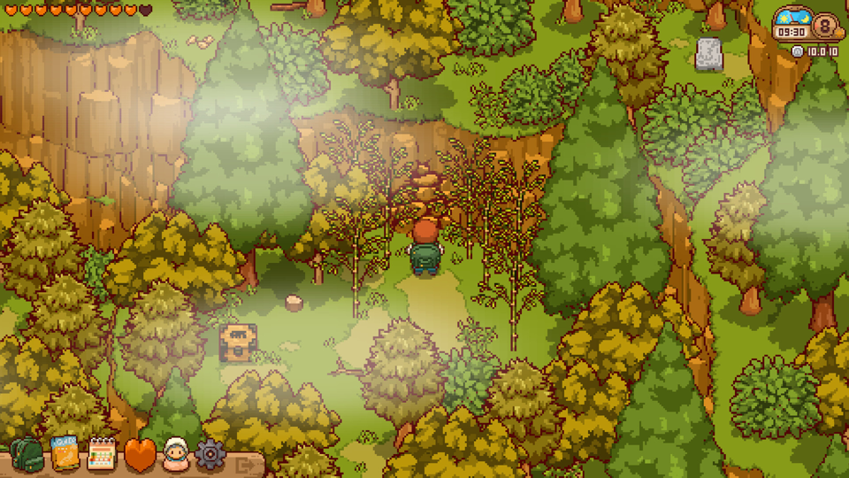
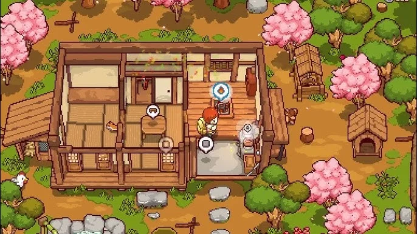
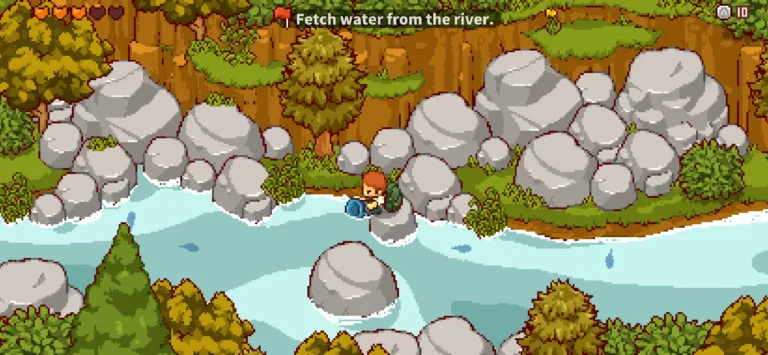
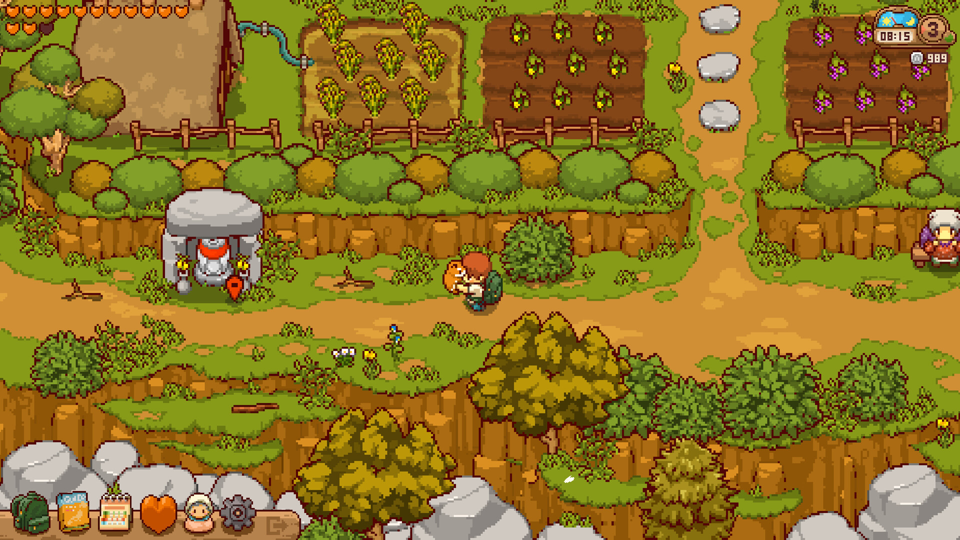
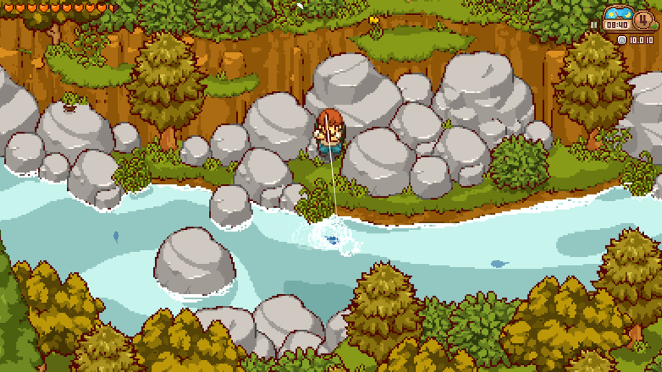
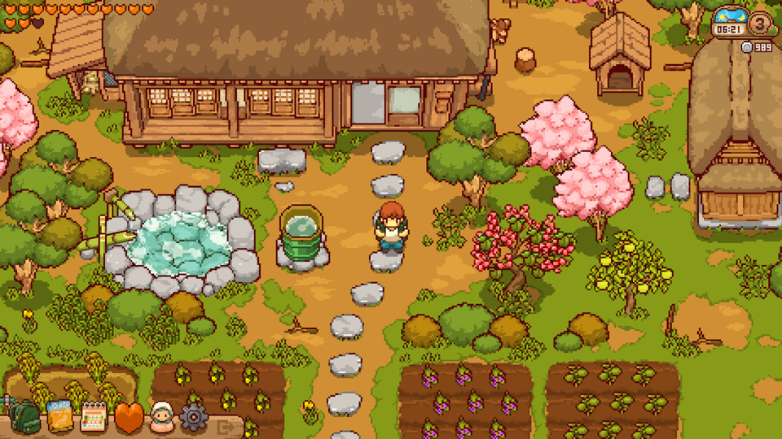
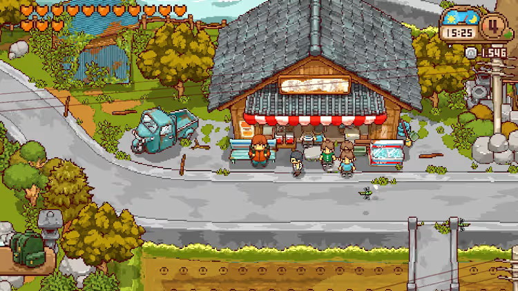
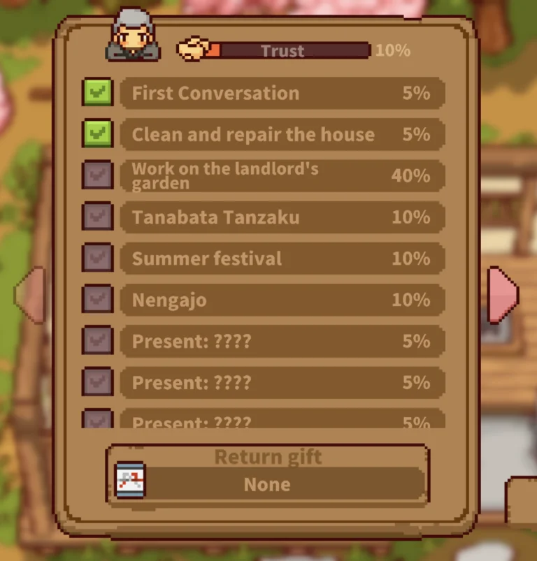
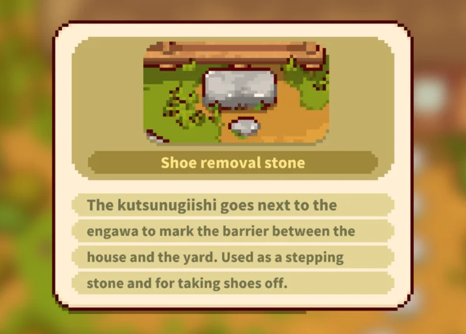
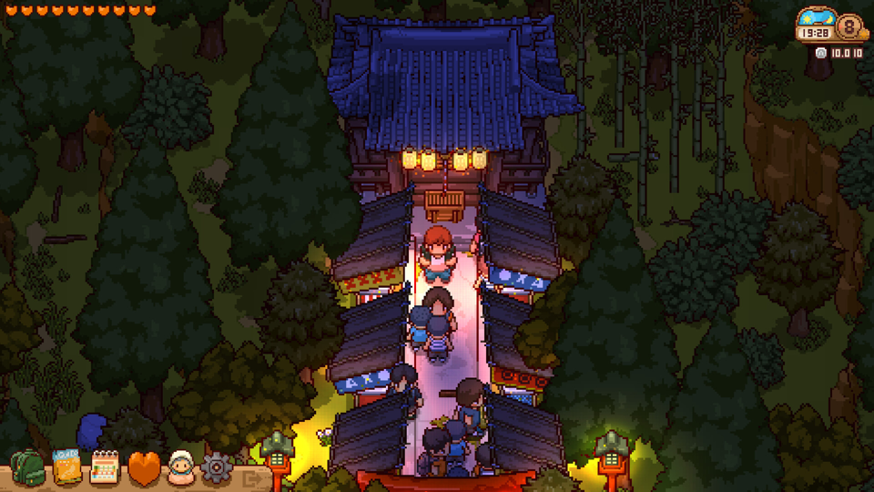
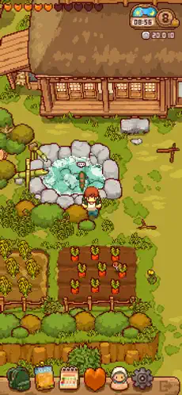
Sources
Steam store page and appreviews API for Japanese Rural Life Adventure (app 4158870, "Very Positive"); the Damage & Armor review; and top-rated community reviews, read for what to do and what to avoid. Cross-read with The Benchmark Lens and synthesised in Lessons for us.